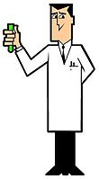
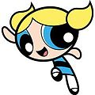
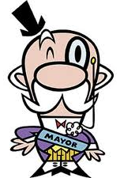
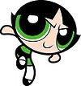
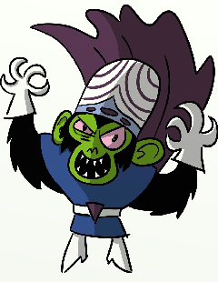

<!DOCTYPE html>
<html>
  <head>
    <meta name="viewport" content="initial-scale=1.0, user-scalable=no">
    <meta charset="utf-8">
    <title>Coup de Mojo Jojo</title>
    <link href="css/default.css" rel="stylesheet">
    <script src="https://maps.googleapis.com/maps/api/js?v=3.exp&sensor=false"></script>
    <script>

var rendererOptions = {
  draggable: false,
  suppressMarkers : true
};
var directionsDisplay = new google.maps.DirectionsRenderer(rendererOptions);;
var directionsService = new google.maps.DirectionsService();
var map;

var singapore = new google.maps.LatLng(1.22, 103.48);

var places = [{location: 'Singapore 648886'}, {location: 'Singapore 467347'}, {location: 'Singapore 729826'}, {location: 'Singapore 098350'}, {location: 'Singapore 828868'}];
var distances;
var destination = 'Singapore 018972';
var origin = 'changi airport';
var stepDisplay;
var markerArray = [];
var infoContent = [
	'<h2>Changi Airport</h2>' +
	'<div>Your journey starts here</div>',
	'<h2>Jurong Point MRT </h2>' +
	'<div>Collect 30 Chemical X here<br />Armor : 30 Shields<br />People : Professor Utonium<br /></div>',
	'<h2>Bedok MRT</h2>' +
	'<div>Collect tons of sweets here<br />Weapons : 25 Flails<br />People : Blossom<br /></div>',
	'<h2>Singapore Zoo</h2>' +
	'<div>Fetch beast army<br />Weapons : 11 Morning Stars<br />People : Bubbles<br /></div>',
	'<h2>Sentosa Cove</h2>' +
	'<div>Get nothing<br />Weapons : 20 Swords<br />People : Mayor<br /></div>',
	'<h2>Punggol MRT</h2>' +
	'<div>Get Nuclear Ray Gun here<br />Armor : 22 Royal Shields<br />People : Buttercup<br /></div>',
	'<h2>Marina Bay Sands</h2>' +
	'<div><b>Mojo Jojo\'s lair</b><br />Make sure you bring enough weapons<br /></div>',
];
function initialize() {

  var mapOptions = {
    zoom: 7,
    mapTypeId: google.maps.MapTypeId.ROADMAP,
    center: singapore
  };
  map = new google.maps.Map(document.getElementById('map-canvas'), mapOptions);
  directionsDisplay.setMap(map);

  calcRoute();
}

function calcRoute() {

  // First, remove any existing markers from the map.
  for (i = 0; i < markerArray.length; i++) {
    markerArray[i].setMap(null);
  }
  
  // Now, clear the array itself.
  markerArray = [];
  
  // Instantiate an info window to hold step text.
  stepDisplay = new google.maps.InfoWindow();
	
  var request = {
    origin: origin,
    destination: destination,
	waypoints: places,
	optimizeWaypoints: true,
    travelMode: google.maps.DirectionsTravelMode.DRIVING
  };
  directionsService.route(request, function(response, status) {
    if (status == google.maps.DirectionsStatus.OK) {
      directionsDisplay.setDirections(response);
	  myRoute = response.routes[0];
	  console.log(myRoute);
	  placeMarker();
    }
  });
}

function placeMarker() {
	for (var i = 0; i < myRoute.legs.length; i++) {
	  var icon = "https://chart.googleapis.com/chart?chst=d_map_pin_letter&chld=" + i + "|FF0000|000000";
	  if (i == 0) {
		//Icon as start position
		icon = "https://chart.googleapis.com/chart?chst=d_map_xpin_icon&chld=pin_star|car-dealer|00FFFF|FF0000";
	  }
	  var marker = new google.maps.Marker({
		position: myRoute.legs[i].start_location, 
		map: map,
		icon: icon
	  });
	  if (i == 0) {
		attachInstructionText(marker, infoContent[0]);
	  } else {
	    attachInstructionText(marker, infoContent[myRoute.waypoint_order[i-1]+1]);
	  }
	  markerArray.push(marker);
	}
	//Icon as end position
	var marker = new google.maps.Marker({
	  position: myRoute.legs[i - 1].end_location, 
	  map: map,
	  icon: "https://chart.googleapis.com/chart?chst=d_map_pin_icon&chld=flag|ADDE63"
	});
    google.maps.event.trigger(markerArray[0], "click");
	attachInstructionText(marker, infoContent[6]);
}

  function attachInstructionText(marker, text) {
    google.maps.event.addListener(marker, 'click', function() {
      // Open an info window when the marker is clicked on,
      // containing the text of the step.
      stepDisplay.setContent('<div style="overflow:auto">'+text+'</div>');
      stepDisplay.open(map, marker);
    });
  }
  
google.maps.event.addDomListener(window, 'load', initialize);

    </script>
  </head>
  <body>
    <div id="map-canvas" style="float:left;width:100%; height:100%"></div>
  </body>
</html>